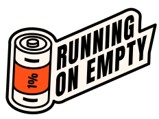

ABOUT FRAZZLED
Sessions
Contact US
need help now?
volunteer WITH US
PARTNER with us
SUPPORT US
Need help now?
Frazzled is designed to provide a safe, confidential and non-judgemental
environment for people who are feeling frazzled and overwhelmed by the
stresses of modern life. Please bear in mind that these meetings are not
therapy sessions and are not designed for those who are in crisis or who are
experiencing a serious mental ill health episode.
If you are currently suffering from serious mental illness, are being provided with significant secondary care, or are in crisis, please be advised that our meetings are not suitable for you. Below is a list of organisations with excellent resources that may be more equipped to support you than Frazzled at this time.
If you are currently suffering from serious mental illness, are being provided with significant secondary care, or are in crisis, please be advised that our meetings are not suitable for you. Below is a list of organisations with excellent resources that may be more equipped to support you than Frazzled at this time.

Mind
Mental health charity, Mind, has a number of services available:
Call: 0300 123 3393 or text 86463
Visit: mind.org.uk
Or mind.org.uk/about-us/local-minds/ to find your local Mind group (in England and Wales) who may provide face-to-face services, such as talking therapies, peer support and advocacy.
Or sidebyside.mind.org.uk (previously Elefriends), Mind’s supportive online community for anyone experiencing a mental health problem.
Call: 0300 123 3393 or text 86463
Visit: mind.org.uk
Or mind.org.uk/about-us/local-minds/ to find your local Mind group (in England and Wales) who may provide face-to-face services, such as talking therapies, peer support and advocacy.
Or sidebyside.mind.org.uk (previously Elefriends), Mind’s supportive online community for anyone experiencing a mental health problem.

MindOut
A mental health service run by and for lesbians, gay, bisexual,
trans and queer people with experience of mental health issues –
open online most evenings from 5:30-7:30pm, and on Sundays from
2-4pm, with additional hours on most days as shown on their
website.
Visit: mindout.org.uk
Visit: mindout.org.uk

Change, Grow, Live
A free support hub for finding support with challenges including
drugs or alcohol, trouble with housing, domestic abuse, or your
mental and physical wellbeing.
Visit: changegrowlive.org
Visit: changegrowlive.org

Campaign Against Living Miserably (CALM)
Provides listening services, information and support for men at
risk of suicide, including a web chat:
Call: 0800 58 58 58 (UK helpline)
Call: 0808 802 58 58 (London helpline)
Visit: thecalmzone.net
Call: 0800 58 58 58 (UK helpline)
Call: 0808 802 58 58 (London helpline)
Visit: thecalmzone.net

Shout
24/7 text service, free on all major mobile networks, for anyone in crisis to reach out to for
immediate support:
Text: 85258
Visit: giveusashout.org
Text: 85258
Visit: giveusashout.org

No Panic Helpline
Helpline operates between 10am and 10pm every day of the year and
is staffed by trained volunteers to help people through panic
attacks. This service has a charge dependent on network provider,
but there is also a free email support service:
Call: 0300 77 29 844
Email: sarah@nopanic.org.uk
Visit: nopanic.org.uk
Call: 0300 77 29 844
Email: sarah@nopanic.org.uk
Visit: nopanic.org.uk

My Black Dog
My Black Dog is a community-focused platform offering peer-to-peer
conversations for people who are struggling with mental health challenges
and trauma. Their service is open most evenings, and can be accessed
through the website link below.
Visit: https://www.myblackdog.co/
Visit: https://www.myblackdog.co/

Rethind Mental Illness
Provides support and information for anyone affected by mental
health problems and also offers local support groups:
Call: 0300 5000 927
Visit: rethink.org
Call: 0300 5000 927
Visit: rethink.org

Samaritans
24-hour emotional support for anyone who needs to talk:
Call: 116 123
Email: jo@samaritans.org
Visit: samaritans.org
Call: 116 123
Email: jo@samaritans.org
Visit: samaritans.org

Supportline
Confidential emotional support aimed at those who are isolated, at
risk, vulnerable and victims of any form of abuse.
Call: 01708 765200
Visit: supportline.org.uk
Email: info@supportline.org.uk
Call: 01708 765200
Visit: supportline.org.uk
Email: info@supportline.org.uk

Hub of Hope
An online database which searches for mental health services
available in your area:
Visit: hubofhope.co.uk
Visit: hubofhope.co.uk

NHS 111
Mental health and medical help and advice for people in England and
some areas of Wales:
Call: 111
Visit: 111.nhs.uk
Call: 111
Visit: 111.nhs.uk

The Black, African and Asian Therapy Network
The UK’s largest independent organisation to specialise in working
psychologically, informed by an understanding of intersectionality,
with people who identify as Black, African, South Asian and
Caribbean.
Visit: BAATN.org
Visit: BAATN.org

StepChange Debt Charity
We have more than 25 years’ experience providing free, expert debt
advice. We’re the UK’s only full debt support service that gives you
complete flexibility. You can complete the process entirely online
or switch between our online and phone service as you choose.
No matter how large or small your debt problem is, we can help. When you come to us for debt help , we’ll look at your financial situation, give you expert advice and recommend debt solutions to suit your situation.
Visit: https://www.stepchange.org/
Call: 0800 138 1111 Monday to Friday 8am to 8pm and Saturday 8am to 4pm
No matter how large or small your debt problem is, we can help. When you come to us for debt help , we’ll look at your financial situation, give you expert advice and recommend debt solutions to suit your situation.
Visit: https://www.stepchange.org/
Call: 0800 138 1111 Monday to Friday 8am to 8pm and Saturday 8am to 4pm



SIGN UP TO OUR NEWSLETTER
Facebook
X
INSTAGRAM
© 2023 Frazzled Cafe. All Rights Reserved. Frazzled Cafe is a registered
charity in England and Wales (#1173064) and Scotland (#SC048841).
Guidelines Terms and Conditions Privacy Policy
Guidelines Terms and Conditions Privacy Policy